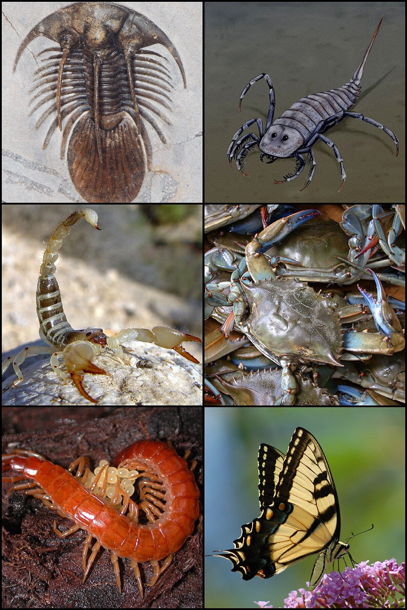

Exoesqueleto de quitina y patas articuladas
Simetria pentarradia, esqueleto externo
Parazoos; sin simetria definida; cuerpo perforado por poros inhaelentes
Gusanos pseudocelomanosde seccion circular con cuticula quitinosa
Boca con radula y manto alrededor de la concha
Volver a inicio